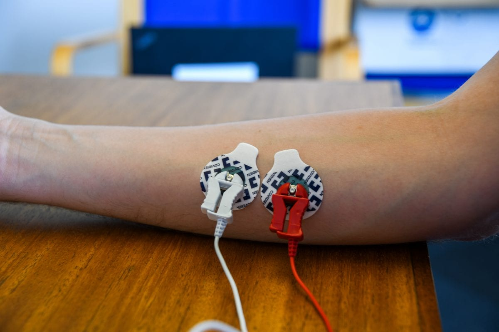

Can Prosthetic Hands Learn to Understand Human Movement?
Popular Science Article | WRTG 3030

Imagine reaching for a bottle, but instead of just moving your hand, you have to figure out how to make a prosthetic hand respond. For most people, hand movements happen without thinking. However, for someone using a prosthetic hand, even simple movements can be difficult. Being able to pick up a cup or open a door without assistance could make a big difference in someone's independence. Researchers are using artificial intelligence to recognize muscle signals and make prosthetic hands easier to control.
How Can Muscles Control a Prosthetic Hand?
In a 2025 study published in Results in Engineering, Lingzhi Lin and other researchers investigated how computers recognize hand movements using electrical signals from muscles. Their goal was to develop an accurate system that required little computing power, which could eventually make prosthetic technology more affordable.
This technology uses electromyography, or EMG. When muscles contract, they produce small electrical signals that sensors on the skin can detect. Even someone missing a hand may still have working forearm muscles that produce signals when they attempt to move their missing hand.
The challenge is figuring out what these signals mean. Different movements can produce similar patterns, making it difficult for a computer to distinguish between actions like gripping and releasing.
Teaching a Computer to Recognize Movement
The researchers used EMG signals from 40 healthy adults performing six hand and wrist actions, including gripping, wrist movements, and resting.
Instead of analyzing every detail, they focused on four characteristics that helped distinguish movements. This process, called feature extraction, identifies important patterns, such as the strength of electrical activity.
They then used a type of artificial intelligence called a multilayer perceptron, or MLP, to recognize movements. This neural network learns from examples, similar to how someone learns to recognize handwriting. By studying different muscle signals, it learns which patterns correspond to specific movements.
Keeping the system simple also reduces computing power and energy requirements, which could lead to smaller components and longer battery life. However, recognizing movements accurately is only part of the challenge. The system also needs to respond quickly.
How Fast and Accurate Is the System?
The computer correctly identified almost 98 out of every 100 movements during testing.
Lin and his team achieved 97.7 percent accuracy in recognizing muscle signal patterns. The system also recognized movements in about 3.2 milliseconds on the testing computer. This is important because delays could make a prosthetic hand difficult to control.
Some wrist movements produced similar signals, occasionally confusing the computer. The study also focused on recognizing signals rather than testing a complete prosthetic hand. More research is needed to determine how well the technology works for people with limb loss.
These results show how artificial intelligence could eventually make prosthetic hands more responsive, practical, and easier to use in everyday life.